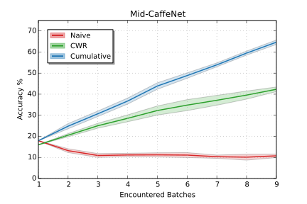
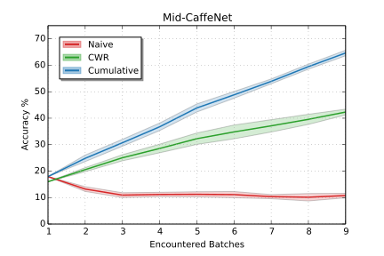

Vincenzo Lomonaco and Davide Maltoni. "CORe50: a new Dataset and Benchmark for Continuous Object Recognition". Proceedings of the 1st Annual Conference on Robot Learning, PMLR 78:17-26, 2017. `
CORe50, specifically designed for (C)ontinuous (O)bject (Re)cognition, is a collection of 50 domestic objects belonging to 10 categories: plug adapters, mobile phones, scissors, light bulbs, cans, glasses, balls, markers, cups and remote controls. Classification can be performed at object level (50 classes) or at category level (10 classes). The first task (the default one) is much more challenging because objects of the same category are very difficult to be distinguished under certain poses.
The dataset has been collected in 11 distinct sessions (8 indoor and 3 outdoor) characterized by different backgrounds and lighting. For each session and for each object, a 15 seconds video (at 20 fps) has been recorded with a Kinect 2.0 sensor delivering 300 RGB-D frames.
Objects are hand hold by the operator and the camera point-of-view is that of the operator eyes. The operator is required to extend his arm and smoothly move/rotate the object in front of the camera. A subjective point-of-view with objects at grab-distance is well-suited for a number of robotic applications. The grabbing hand (left or right) changes throughout the sessions and relevant object occlusions are often produced by the hand itself.

Fig.1 Example images of the 50 objects in CORe50. Each column denotes one of the 10 categories.
The presence of temporal coherent sessions (i.e., videos where the objects gently move in front of the camera) is another key feature since temporal smoothness can be used to simplify object detection, improve classification accuracy and to address semi-supervised (or unsupervised) scenarios.
In Fig. 1 you can see some image examples of the 50 objects in CORe50 where each column denotes one of the 10 categories and each row a different object. The full dataset consists of 164,866 128×128 RGB-D images: 11 sessions × 50 objects × (around 300) frames per session. Three of the eleven sessions (#3, #7 and #10) have been selected for test and the remaining 8 sessions are used for training. We tried to balance as much as possible the difficulty of training and test session with respect to: indoor/outdoor, holding hand (left or right) and complexity of the background. For more information about the dataset take a look a the section "CORe50" in the paper.
 


Fig. 2 Mid-CaffeNet accuracy in the NI, NC and NIC scenarios (average over 10 runs).
As you probably noted from the description above, our benchmark is somehow different from the common benchmarks used in the Continuous Learning literature where the focus is mostly about learning a (short) sequence of tasks:
In the first and last benchmarks the output distribution stay fixed across all the tasks (each task has all the possible MNIST digits and actions in the Atari games) making it more similar to our NI scenario.The dataset directory tree is not that different from what you may expect. For each session (s1, s2, ..., s11) we have 50 directories (o1, o2, ..., o50) representing the 50 objects contained in the dataset. Below you can see to which class each object instance id corresponds to:
[o1, ..., o5] -> plug adapters
[o6, ..., o10] -> mobile phones
[o11, ..., o15] -> scissors
[o16, ..., o20] -> light bulbs
[o21, ..., o25] -> cans
[o26, ..., o30] -> glasses
[o31, ..., o35] -> balls
[o36, ..., o40] -> markers
[o41, ..., o45] -> cups
[o46, ..., o50] -> remote controls
In each object directories, the temporal coherent frames are characterized by an unique filename with the format "C_[session_num]_[obj_num]_[frame_seq_id].png" :
CORe50/
|
|--- s1/
| |------ o1/
| | |---- C_01_01_XXX.png
| | |---- ...
| |
| |------ o2/
| |------ ...
| |------ o50/
|
|--- s2/
|--- s3/
|--- ...
|--- s11/
Since we make available both the 350 x 350 original images and their cropped version (128 x 128), we thought it would be useful also to release the bounding boxes with respect to the original image size.
The bbox coordinates for each image are automatically extracted based on a very simple tracking technique, briefly described in the paper. In the bbox.zip you can download below you will find for each object and session a different txt file. Each file follows the format:
Color000: 142 160 269 287
Color001: 143 160 270 287
Color002: 145 160 272 287
Color003: 149 160 276 287
Color004: 149 159 276 286
...
So, for each image ColorID, we have the bbox in the common format [min x, min y, max x, max y] of the image coordinates system.
If you are a Python user you can also benefit by our npz version of the dataset core50_imgs.npz accompanied by the paths.pkl file which contains the path corresponding to each image.
# loading the npz and picked file
>>> import numpy as np
>>> import pickle as pkl
>>> pkl_file = open('paths.pkl', 'rb')
>>> paths = pkl.load(pkl_file)
>>> imgs = np.load('core50_imgs.npz')['x']
# Files dimensions
>>> print imgs.shape
(164866, 128, 128, 3)
>>> print len(paths)
164866
In order to better track the moving objects or to further improve the object recognition accuracy, we release also the depth map in the same format we have seen before for the colored images:
CORe50/
|
|--- s1/
| |------ o1/
| | |---- D_01_01_XXX.png
| | |---- ...
| |
| |------ o2/
| |------ ...
| |------ o50/
|
|--- s2/
|--- s3/
|--- ...
|--- s11/
As you can see from Fig. 3, the depth map is not perfect (further enhancing preprocessing steps can be performed) but it can be also easily converted in a segmentation map using a moving threshold.
Fig. 3 Example of a depth map (dark is far) for the object 33 with a complex background. Chessboard pattern where the depth information is missing.
Finally, to make sure everything is there, you can check the exact number of (color + depth) images you're going to find for each object and session:
Do you wanna use a different DL framework or programming language but still being able to compare your results with our benchmark? Well that's easy! Just download the batches filelists for each experiment in plain .txt format! The filelists directory tree will look like this:
filelists/
|
|--- NI_inc/
| |------ Run0/
| | |------ train_batch_00_filelist.txt
| | |------ train_batch_01_filelist.txt
| | |------ ...
| | |------ test_filelist.txt
| |
| |------ Run1/
| |------ ...
| |------ Run9/
|
|--- NI_cum/
|--- NC_inc/
|--- NC_cum/
|--- NIC_inc/
|--- NIC_cum/
# loading the picked file
>>> import pickle as pkl
>>> pkl_file = open('labels2names.pkl', 'rb')
>>> labels2names = pkl.load(pkl_file)
# using the dict like labels2names[scenario][run]
>>> print exps['ni'][0]
{0: 'plug_adapter1', 1: 'plug_adapter2', ... }
###################################
# scenario: NI
# net: mid-caffenet
# strategy: naive
###################################
RunID Batch0 Batch1 Batch2 Batch3 Batch4 Batch5 Batch6 Batch7
0 44,30% 35,50% 55,26% 55,86% 54,39% 48,90% 47,77% 60,71%
1 47,56% 48,94% 51,83% 53,64% 51,26% 43,39% 58,98% 55,61%
2 40,06% 53,04% 46,65% 45,19% 44,09% 50,92% 54,42% 57,01%
3 46,29% 48,66% 54,64% 52,48% 44,36% 51,55% 50,64% 44,26%
4 28,40% 43,77% 43,27% 51,00% 58,26% 56,89% 52,08% 61,94%
5 34,65% 34,36% 50,14% 56,89% 59,67% 56,66% 56,16% 52,66%
6 40,80% 51,92% 51,44% 53,12% 58,19% 49,72% 50,33% 48,14%
7 30,96% 51,54% 46,28% 51,69% 56,88% 55,44% 55,72% 49,98%
8 34,32% 32,19% 40,55% 52,06% 57,86% 57,41% 57,80% 61,86%
9 46,06% 47,62% 51,80% 46,92% 42,30% 57,70% 59,98% 50,01%
avg 38,59% 44,44% 48,90% 52,44% 53,88% 52,32% 53,77% 54,69%
dev.std 6,87% 7,88% 4,84% 3,59% 6,75% 4,74% 4,06% 6,18%
....
# loading the picked file
>>> import pickle as pkl
>>> pkl_file = open('results.pkl', 'rb')
>>> exps = pkl.load(pkl_file)
# using the dict like exps[scenario][net][strategy][run][batch]
>>> print exps['NI']['mid-caffenet']['naive']['avg'].values()
[38.59, 44.44, 48.90, 52.44, 53.88, 52.32, 53.77, 54.69]
>>> print exps['NI']['mid-caffenet']['naive']['avg']['Batch0']
38.59
# importing CORe50
>>> import data_loader
>>> train_set = data_loader.CORE50(root='/home/admin/core50_128x128', cumul=False, run=0)
# Using the data loader
>>> for batch in train_set:
... # This is the training batch not the mini-batch
... x, y = batch